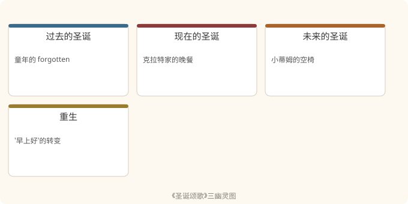

圣诞颂歌
一、基本信息
| 作者 | 狄更斯 |
|---|---|
| 成书/出版 | 1843年（作者页 B120 口径：圣诞颂歌（1843）） Charles Dickens — Encyclopaedia Britannica（百科全书） |
| 国别/地区 | 英国 |
| 时代 | 近代 · 19世纪 |
| 体裁 | 中篇小说 |
| 语言 | 英语 |

《圣诞颂歌》三幽灵图（主题·结构图）
二、创作背景
作者页（B120）：狄更斯 major_works 载'圣诞颂歌（1843）'（B120 作者页定位，详见 dawei 条核对）。
题材（通说待核）：斯克鲁奇的三次'幽灵'之旅——过去/现在/未来的圣诞。
三、内容脉络
马里的鬼魂警告→三个圣诞幽灵→'早上好，先生'的转变（通说待核）。
四、主要人物表
| 人物 | 身份 | 说明 |
|---|---|---|
| 斯克鲁奇 | 吝啬鬼 | 转变者（通说待核） |
| 鲍勃·克拉奇特 | 职员 | 小蒂姆的父亲（通说待核） |
五、主题与艺术特点
- 圣诞的人道主义：'圣诞快乐'的现代发明（通说待核）。
- 吝啬与重生（通说）。
- '幽灵故事'的圣诞传统（书副题——通说）。
六、影响与评论
- 作者页：狄更斯圣诞书代表作（B120 作者页口径）。
Charles Dickens — Encyclopaedia Britannica（百科全书） - 'Merry Christmas'的现代流行与本书互证（通说待核）。
Charles Dickens — Encyclopaedia Britannica（百科全书）
七、阅读建议
难点
- 古体'幽灵故事'的语调。
- 维多利亚圣诞习俗。
- 《圣诞颂歌》（人民文学出版社/上海译文版本，通说待核）。
- 英文原版（公有领域）。
狄更斯圣诞书系列之首（五部）。
八、待核实
- 1843年12月19日初版核对。
- 斯克鲁奇/克拉奇特人名核对。
- '圣诞书'系列（五部说）待核。